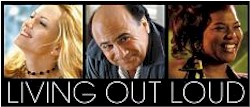
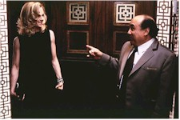
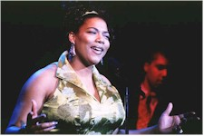

Contents | Features | Reviews | News | Archives | Store |
 |
|
| Movie Credits | Buy It! |
Living Out Loud
Review by Gregory Avery
Posted 6 November 1998
|  | Written and Directed by Richard LaGravenese Starring
Holly Hunter, Danny De Vito, Martin Donovan, |
In Living Out Loud, the directorial debut of screenwriter Richard LaGravenese, Holly Hunter plays Judith, a middle-aged, childless divorcee who strikes up a friendship with the doorman, Pat (Danny De Vito), in her Fifth Avenue co-op building. Pat, the kind of guy who has never quite been able to be as successful in life as he would like to be, misinterprets it as the beginnings of a romance. Their subsequent experiences are supposed to leave both of them for the better, with Judith feeling more responsive, open, and able to take-charge of her life. Well, that's one way you could look at it.
Filming in satiny colors provided by John Bailey (who also photographed The Big Chill, now in re-release), LeGravenese shows confidence and even executes some neat directorial flourishes, but he can't make the elements in the story fit together, and those are the elements that don't seem downright screwy. At times, it incorporates commentary on how our modern society has made people more closed and hostile to their surroundings. Then, it appears as if it'll be a May-December romance, like one of those "autumn leaves" type of movies Joan Crawford made in the Fifties. (Substitute Crawford, Cliff Robertson, and a hurled typewriter, and this could be Autumn Leaves, Crawford's 1958 soap opera.) Subplots involving some of the characters, such as the swanky nightclub singer Liz (played by the swanky, poised singer Queen Latifah), whom Judith strikes up an improbable friendship with, are introduced, then abandoned.
When the focus shifts onto Hunter's character, the picture turns into An Unmarried Woman for the late Nineties, but with a decided difference. Wearing blond, wavy hair that curls around her face at odd angles, and squiggled into a short black dress, like a model for a Prada ad, Holly Hunter's performance, intentionally or not, seems to ooze perversity from every pore. LaGravenese sends strange men up to her apartment to give her a massage, then has her pop drugs and trot off to a Lesbian nightclub to dance until the wee hours. This is not exactly Jill Clayburgh jogging 'round Manhattan in the morning. (Queen Latifah's character even delivers a speech about how she prefers boyfriends who are gay because they're more "gentle", then shrugs, "You gotta take what you can get." They've got to be kidding.) In the end, Hunter comes across less like a woman expressing confidence, independence and the fortuitousness to make her own way through life then like someone who'll end up masochistically getting involved with young men hanging around the Spanish Steps in The Roman Spring of Mrs. Stone. Not, I think, what the filmmakers had in mind, but, again, I could be wrong.
Contents | Features | Reviews | News | Archives | Store
Copyright © 1999 by Nitrate Productions, Inc. All Rights Reserved.